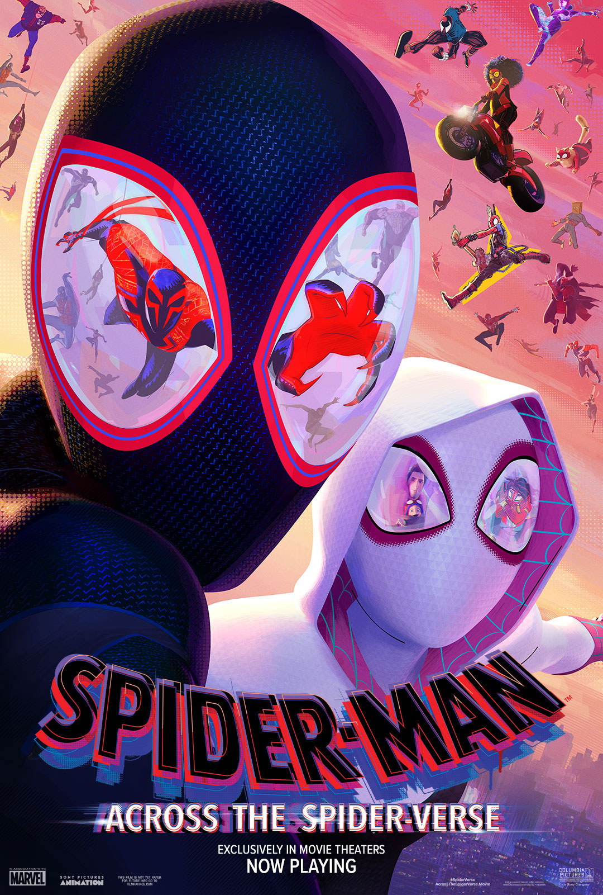

Synopsis
Miles Morales returns for the next chapter of the Oscar®-winning Spider-Verse saga, Spider-Man™: Across the Spider-Verse. After reuniting with Gwen Stacy, Brooklyn’s full-time, friendly neighborhood Spider-Man is catapulted across the Multiverse, where he encounters the Spider Society, a team of Spider-People charged with protecting the Multiverse’s very existence. But when the heroes clash on how to handle a new threat, Miles finds himself pitted against the other Spiders and must set out on his own to save those he loves most. Anyone can wear the mask – it’s how you wear it that makes you a hero.